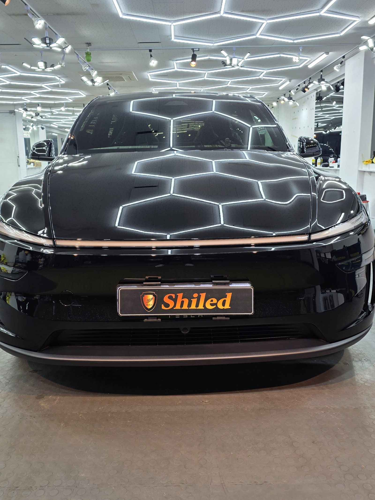
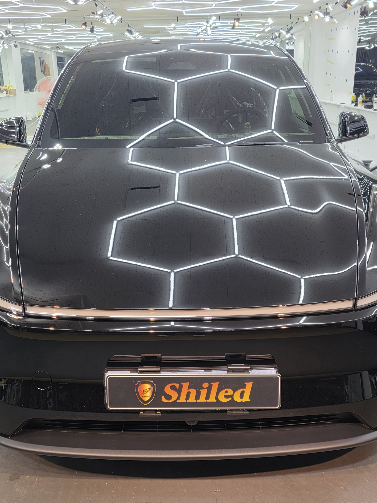
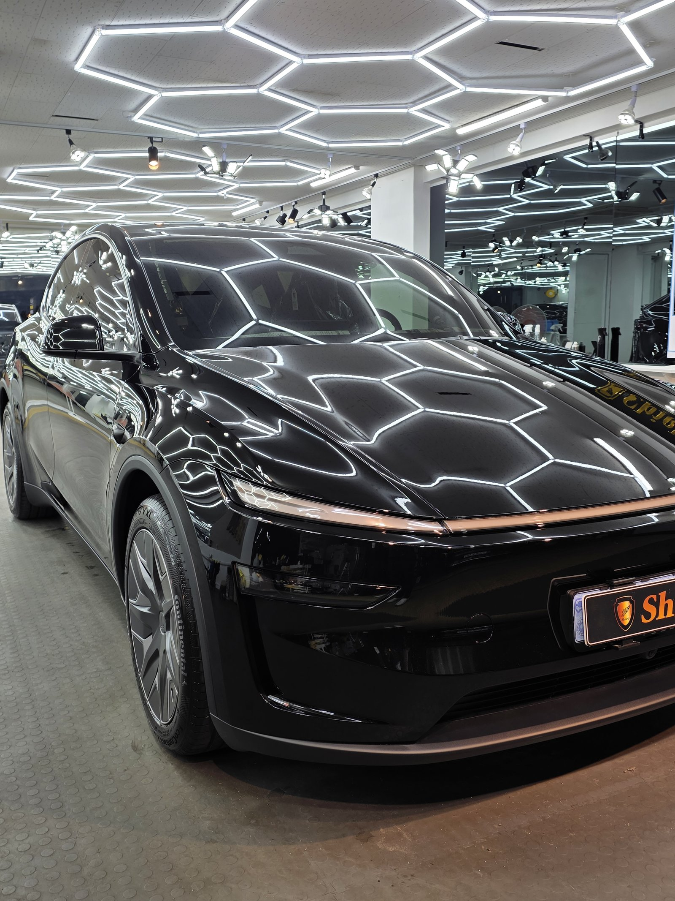
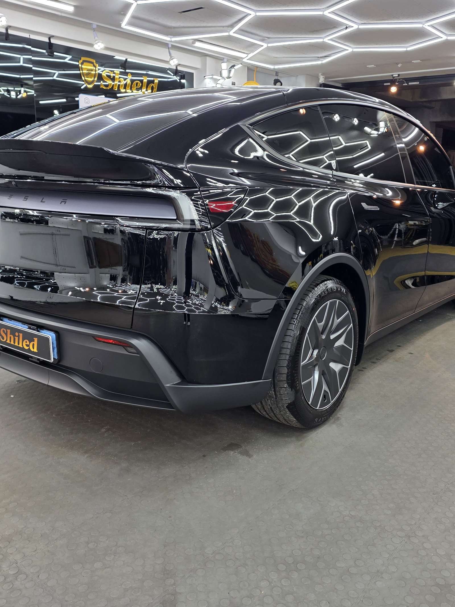
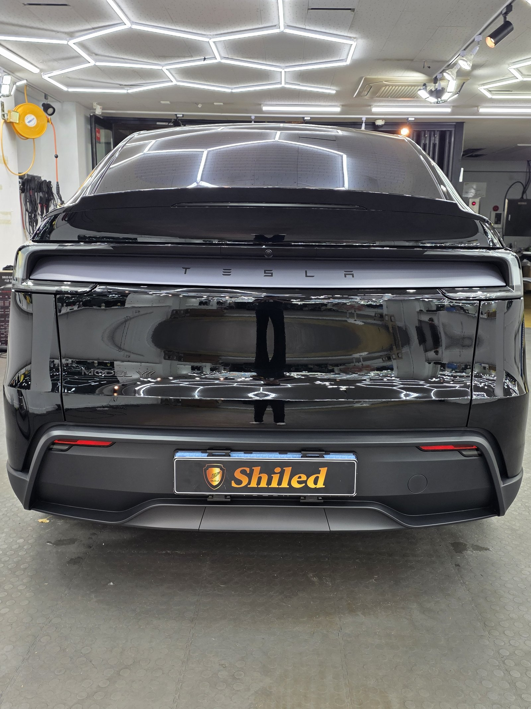
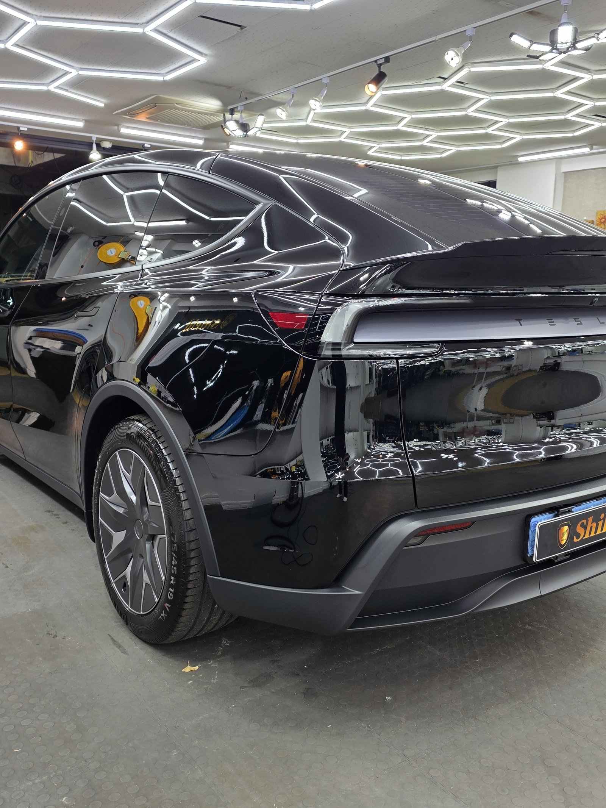
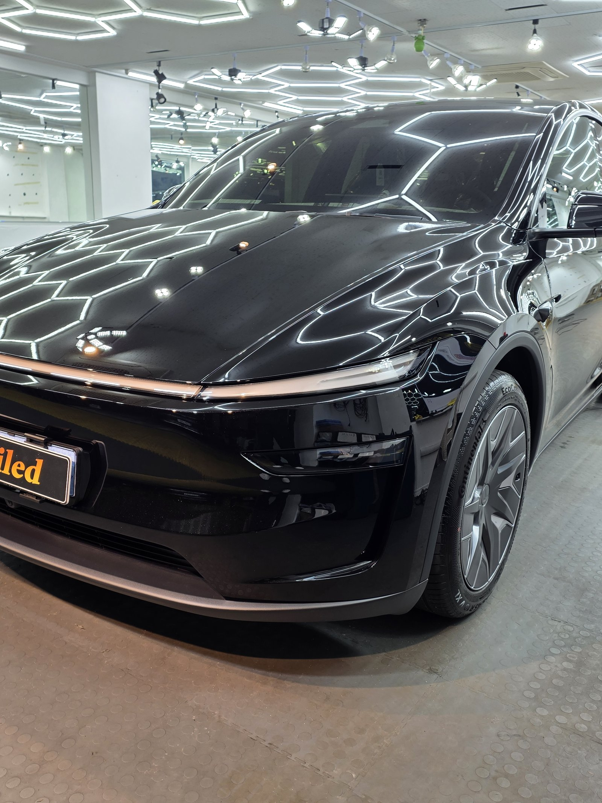
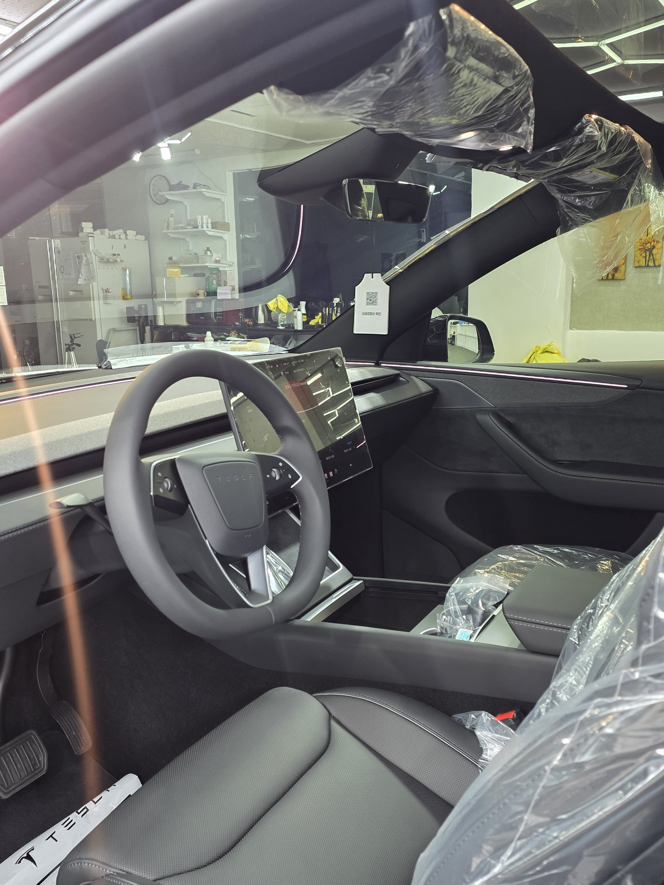
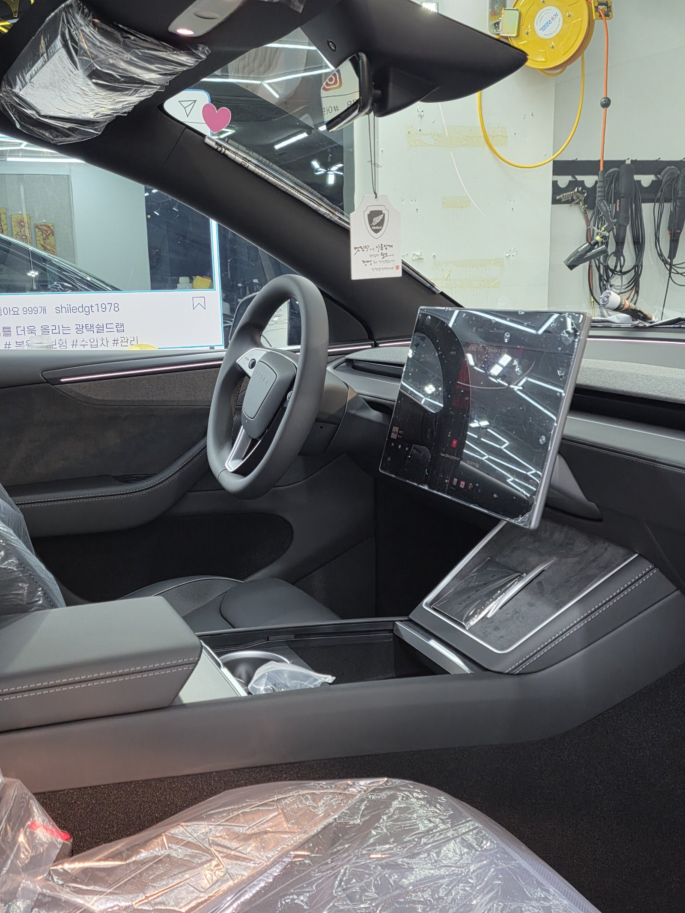
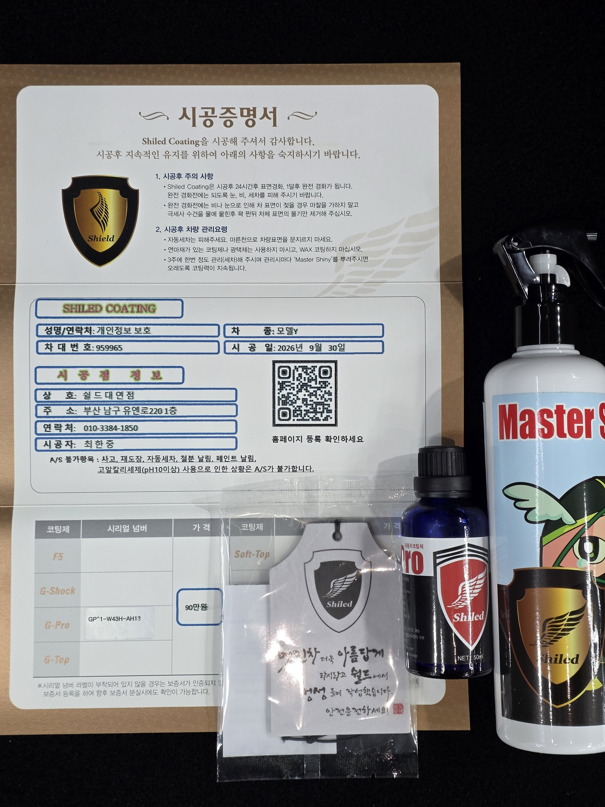

테슬라 모델Y, 검정입니다.
앞뒤로 라이트바가 이어진 신형 모델Y, 실내 비닐도 그대로인 새 차입니다.
검정 테슬라는 부산 유리막코팅 문의 중에서도 잔기스 걱정이 가장 많은 조합입니다.

검정 모델Y는 왜 잔기스 걱정이 많나요?
검정은 잔기스가 가장 잘 보이는 색입니다.
여기에 세차 횟수가 늘면 스월 자국이 빠르게 쌓입니다.
그래서 이 차는 광보다 표면을 단단하게 만드는 쪽에 무게를 뒀습니다.
보닛과 루프 라인에 비친 조명으로 면 상태를 확인했습니다.


모델Y 검정에 G-PRO를 올린 이유
G-PRO는 경도에 특화된 하드코팅입니다.
스크래치 내성을 높여 세차 잔기스 부담을 줄여줍니다.
부산 유리막코팅 작업에서 검정 테슬라는 G-PRO를 고르시는 분이 많습니다.
코팅제는 대표가 직접 개발·제조한 제품입니다.

전기차는 어디를 더 챙기나요?
전기차는 충전 포트 덮개 틈과 전후방 카메라·센서 주변에 코팅제가 고이지 않도록 따로 확인합니다. 충전 포트는 자주 여닫는 부위라 마감 상태를 한 번 더 봅니다.
기술자의 팁
코팅해도 마른 수건으로 먼지를 닦으면 기스가 납니다. 검정 차는 충분히 물로 불린 뒤 부드러운 미트로 한 방향으로 닦아주시는 것이 좋습니다.



실내와 관리 제품까지 챙깁니다
실내는 보호 비닐이 그대로인 신차 상태입니다.
인도할 때는 시공증명서와 함께 관리용 제품도 챙겨 드렸습니다.


시공증명서를 함께 드립니다
모든 시공 차량에 시공증명서를 드립니다.
차종·시공일·코팅제 시리얼 번호가 적혀 있고, 홈페이지에 등록해 보증을 받으실 수 있습니다. 이 차는 G-PRO로 기록돼 있습니다.

차종·시공일·코팅제 시리얼이 기재된 시공증명서
자주 묻는 질문
Q. 검정 모델Y에는 어떤 코팅이 맞나요?
A. 이 차는 G-PRO로 진행했습니다. G-PRO는 경도에 특화돼 잔기스가 잘 보이는 검정 도장면의 스크래치 내성을 높여줍니다.
Q. 전기차 유리막코팅은 뭐가 다른가요?
A. 코팅 공정은 같지만 충전 포트 주변과 센서·카메라 주변을 따로 확인합니다. 자주 여닫는 충전 포트 덮개 틈 마감을 한 번 더 봅니다.
Q. G-PRO 코팅하면 기스가 안 생기나요?
A. 기스를 완전히 막지는 못합니다. 스크래치 내성을 높여 잔기스 부담을 줄여주는 것이고, 세차 습관이 함께 가야 오래 갑니다.
Q. 코팅 후 세차는 언제부터 하나요?
A. 코팅이 자리 잡을 시간이 필요하므로 시공 직후 강한 세차는 피하는 것이 좋습니다. 정확한 시점은 인도할 때 안내해 드립니다.
Q. 쉴드광택 위치와 예약은 어떻게 하나요?
A. 부산 남구 유엔로220 1F 쉴드광택입니다. 예약·상담은 010-3384-1850, 대표 최한중이 직접 상담하고 책임 시공합니다.
새 차일수록 시작점이 다릅니다. 가장 깨끗할 때 입혀두십시오.
제품을 직접 만드는 사람이 직접 시공합니다.
부산에서 신차 유리막코팅을 고민 중이시면 편하게 연락 주십시오.
어떤 차를 타냐보다 어떻게 타냐가 중요합니다~!
시공 중에는 전화를 받지 못할 때가 많습니다.
카카오톡으로 차종과 원하시는 시공을 남겨주시면 확인 후 답변드립니다.
쉴드광택 · 부산 남구 유엔로220 1F · 대표 최한중